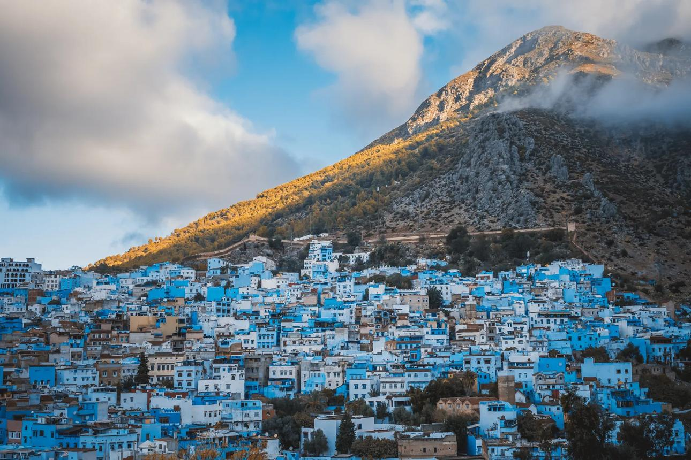
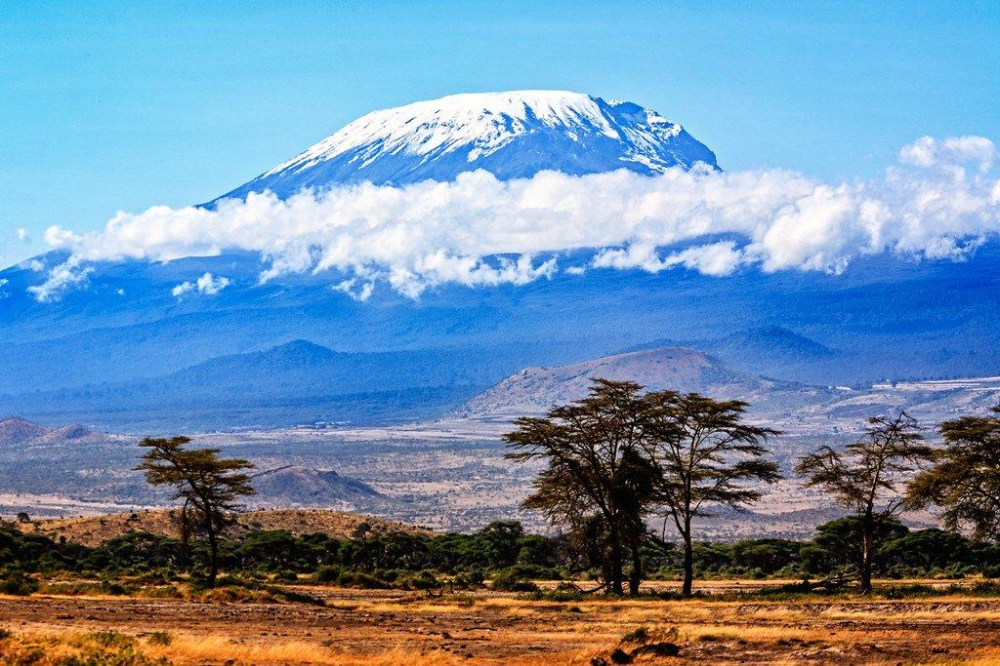
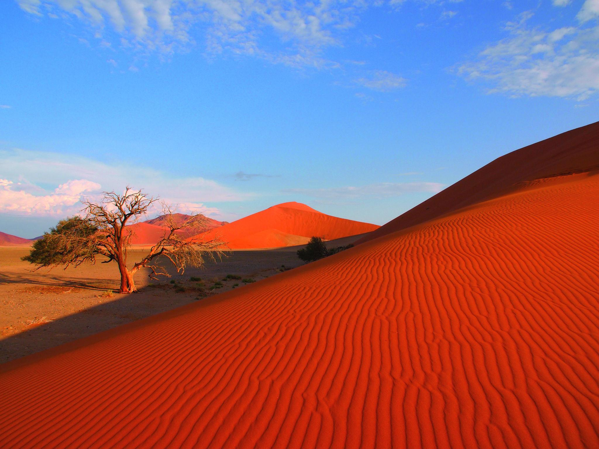
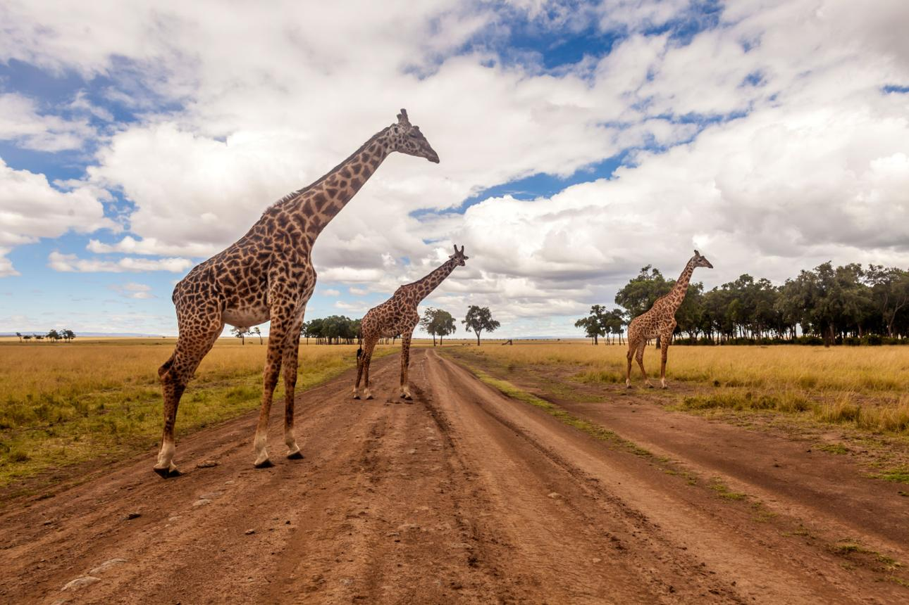
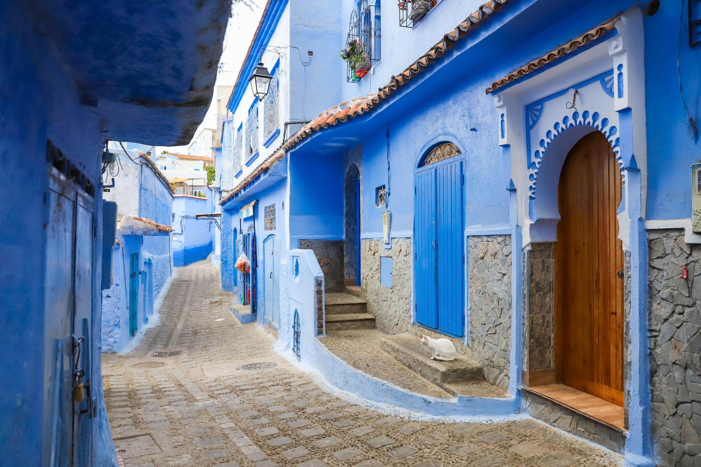
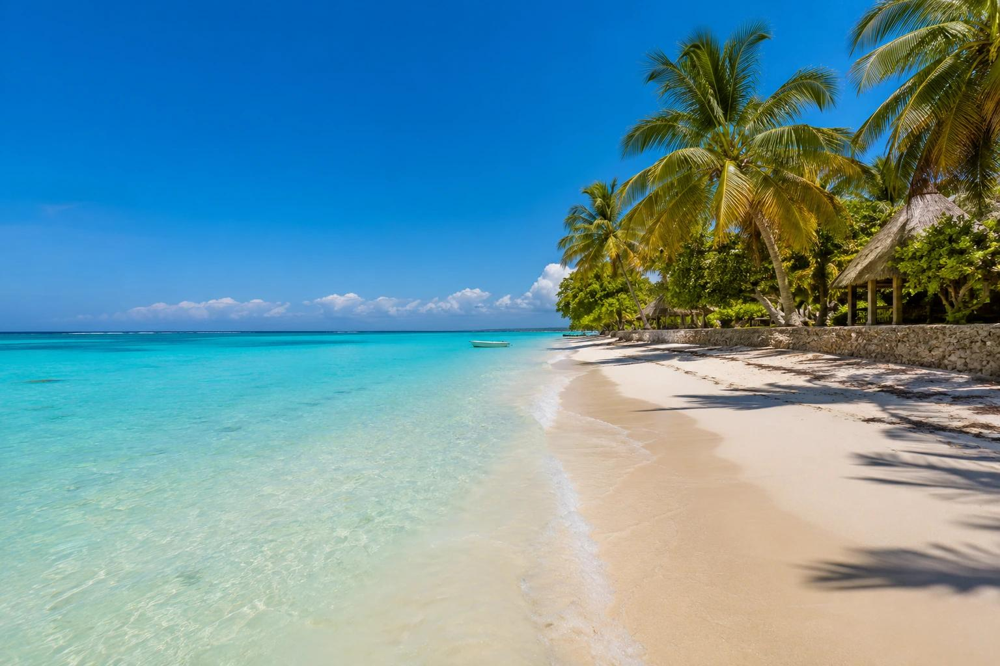
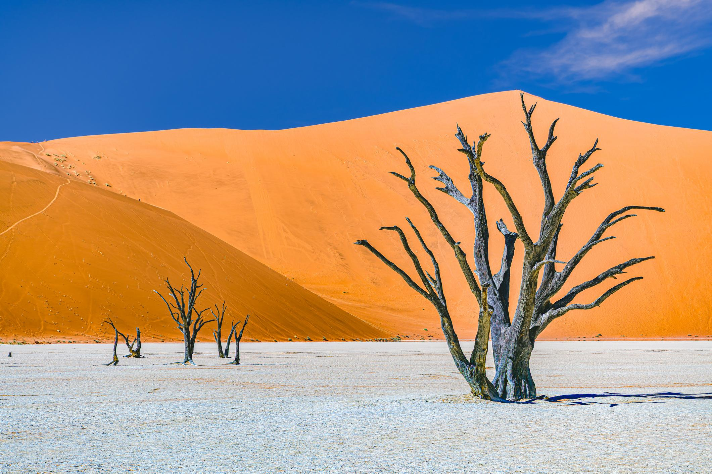
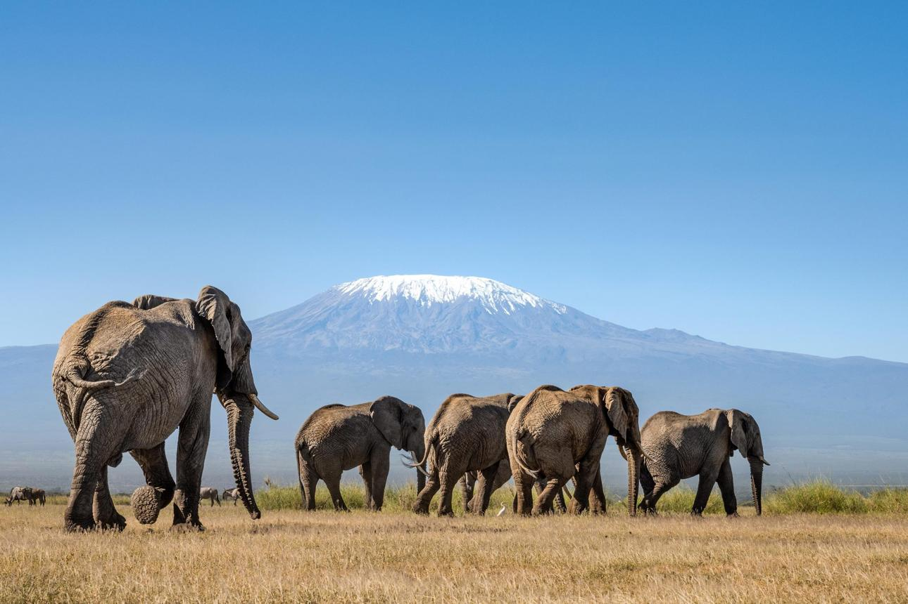
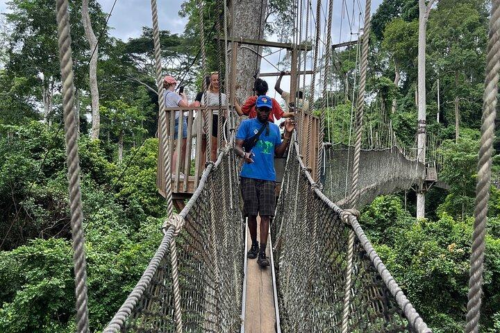

Morocco

Trek in the High Atlas, wander the markets of Marrakech and see the blue streets of Chefchaouen.
AtlasPeak Travel
Explore our range of exciting destinations across Africa.

Trek in the High Atlas, wander the markets of Marrakech and see the blue streets of Chefchaouen.

Climb Mount Kilimanjaro, explore Ngorongoro Crater and relax on the beaches of Zanzibar.

Camp beneath the granite peaks of Spitzkoppe, see wildlife in Etosha and visit the coast at Swakopmund.

Go on safari in the Maasai Mara, hike Mount Kenya and visit Nairobi.

Discover the lively cities of Accra and Kumasi and the green hills of the Volta Region.
Prefer a ready-made trip? See our tour packages.
Found a place you like? Fill in the booking form or contact us with any questions.
Morocco is a North African country known for its diverse landscapes, rich culture, and vibrant cities. From the bustling streets of Marrakech to the stunning Sahara Desert, Morocco offers a unique blend of experiences for every traveler.

Tanzania is an East African country famous for its beautiful landscapes, wildlife, and beaches. Visitors can explore Mount Kilimanjaro, enjoy wildlife safaris in the Serengeti National Park, and relax on the beautiful island of Zanzibar.

Namibia is a beautiful country in southwestern Africa known for its vast deserts, wildlife, and unique natural scenery. Explore the Namib Desert, visit the famous Sossusvlei dunes, and discover the wildlife of Etosha National Park.

Kenya is an East African destination known for its wildlife, beautiful landscapes, and rich culture. Explore the Maasai Mara National Reserve, visit Mount Kenya, and discover the vibrant city of Nairobi.

Ghana is a West African country known for its welcoming people, colorful culture, historical landmarks, and beautiful beaches. Explore Accra, discover the history of Cape Coast Castle, and enjoy the natural beauty of the Volta Region.
